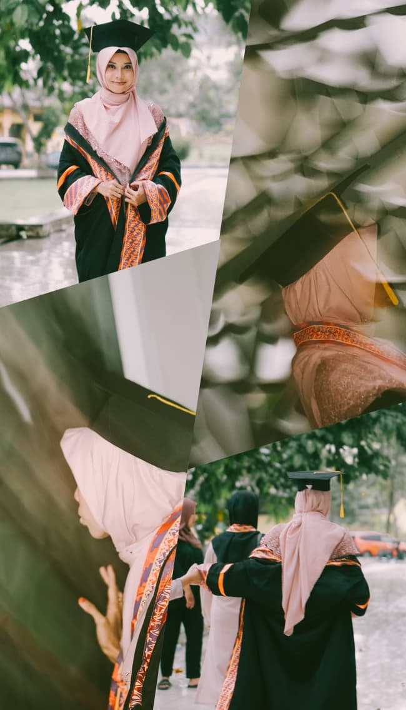
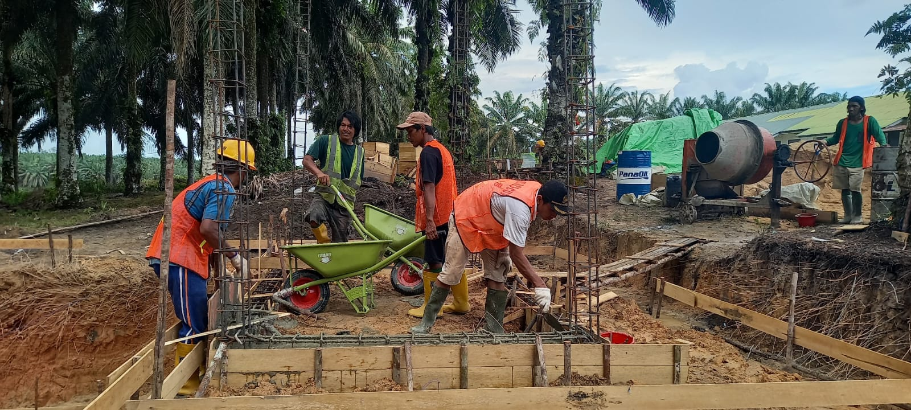
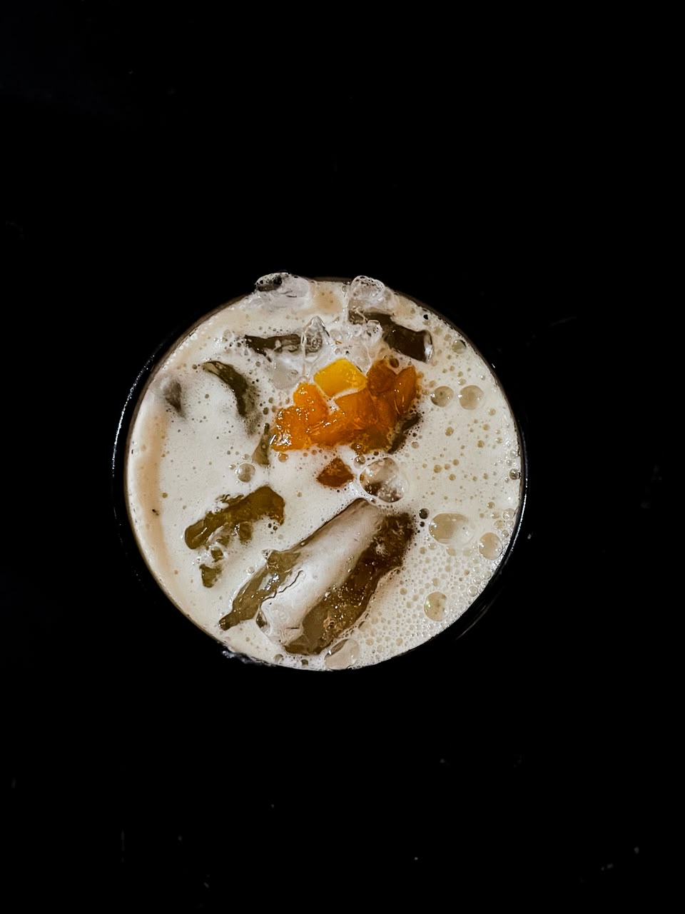
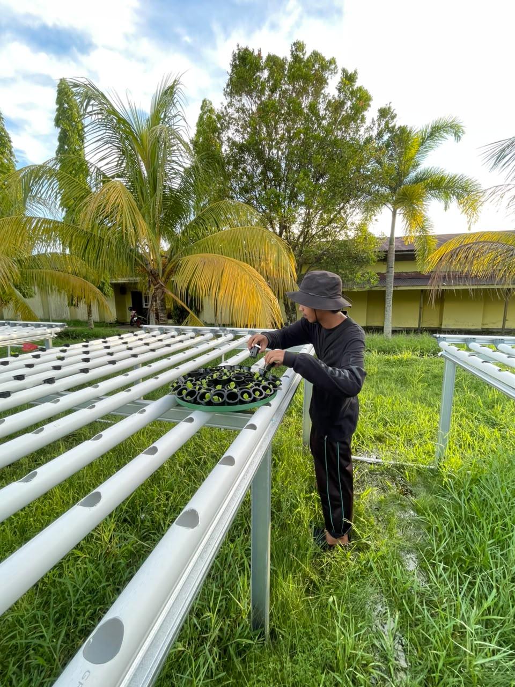
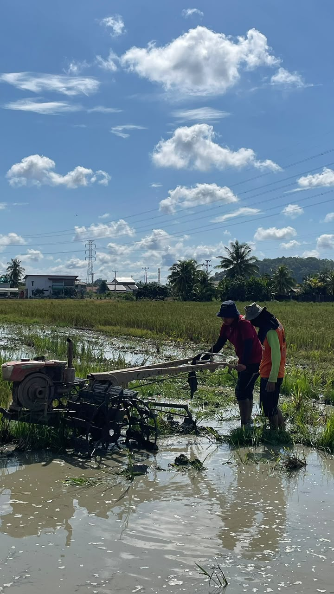

WELCOME TO MY PORTFOLIO
Sarjana Agroteknologi Universitas Tanjungpura dengan pengalaman di bidang pertanian, administrasi, pelayanan pelanggan, dan fotografi.
Explore My Portfolio Download CVGET TO KNOW ME
Saya merupakan lulusan S1 Agroteknologi Universitas Tanjungpura dengan pengalaman di bidang pertanian, administrasi pergudangan dan suku cadang, pelayanan pelanggan, serta fotografi. Memiliki kemampuan beradaptasi, komunikasi, ketelitian, dan pengelolaan pekerjaan secara terorganisir. Terbiasa bekerja dalam lingkungan yang dinamis serta memiliki semangat untuk terus mengembangkan keterampilan dan pengetahuan. Saya terbuka terhadap berbagai peluang karier untuk berkontribusi dan berkembang secara profesional.

2024 – Sekarang
Melaksanakan kegiatan fotografi wisuda dengan mengabadikan momen penting melalui pengambilan gambar yang kreatif dan berkualitas. Bertanggung jawab dalam pengaturan kamera, komposisi, pencahayaan, serta memberikan pelayanan yang baik kepada pelanggan.

April – Juni 2026
Mendukung kegiatan administrasi pergudangan dan pengelolaan suku cadang, termasuk pencatatan data barang, pemeriksaan stok, penataan dokumen, serta membantu memastikan ketertiban administrasi dan ketersediaan barang.

Oktober – Desember 2025
Menyiapkan dan menyajikan minuman sesuai standar pelayanan, menjaga kebersihan area kerja, melayani pelanggan, serta bekerja sama dengan tim untuk menciptakan pengalaman pelayanan yang baik.

Juli – Agustus 2025
Mengikuti kegiatan praktik budidaya tanaman menggunakan sistem hidroponik, mulai dari persiapan instalasi, penyemaian, pemeliharaan tanaman, pemantauan pertumbuhan, hingga proses panen.

Februari – Juli 2025
Mendapatkan pengalaman praktik di lingkungan instansi pemerintahan melalui kegiatan yang berkaitan dengan bidang pertanian, ketahanan pangan, dan perikanan. Mengembangkan pemahaman mengenai administrasi, kegiatan lapangan, serta pelaksanaan program kerja instansi.
ACADEMIC BACKGROUND
Sarjana Agroteknologi (S1)
2022 - 2025
Pontianak, Kalimantan Barat
LET'S CONNECT
Email: rizkymardiansyahmaruf@gmail.com
WhatsApp: 085787486215
LinkedIn: Rizky Mardiansyah Ma'ruf